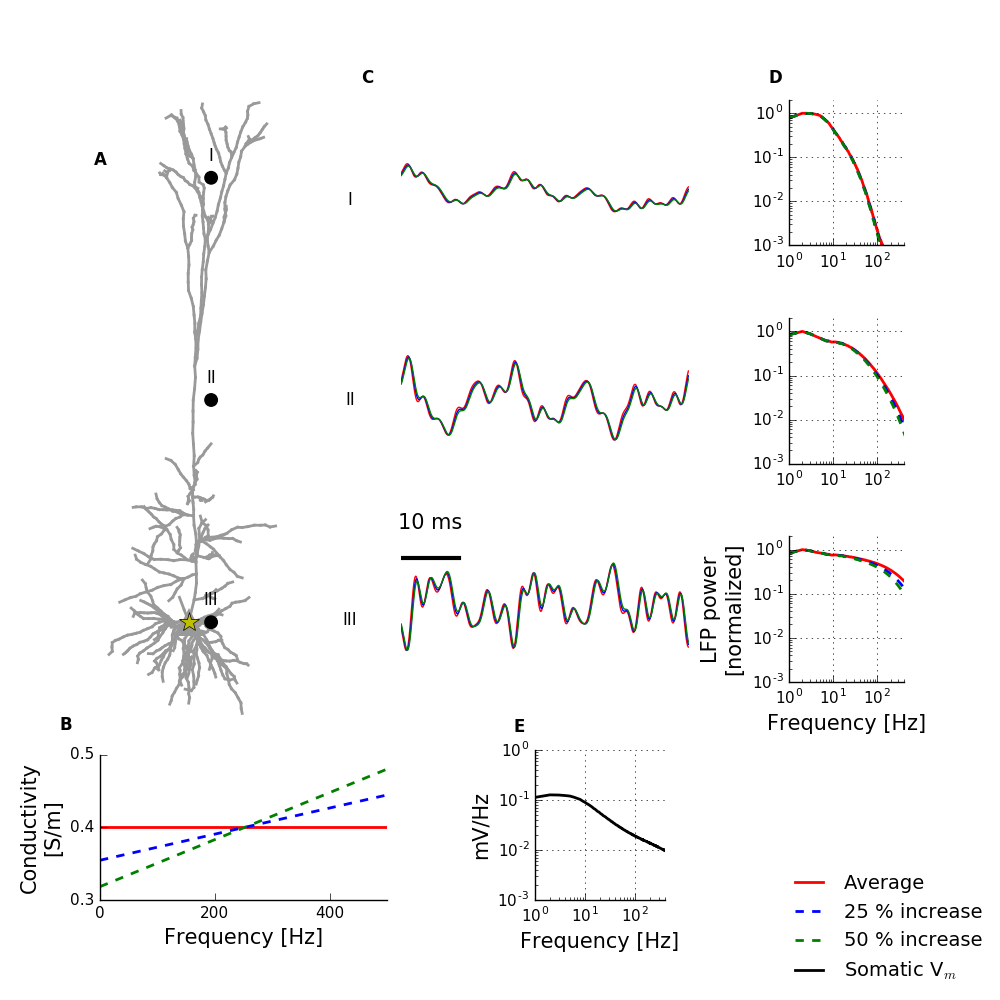

This python package reproduces simulation results from Miceli, Ness, Einevoll, Schubert (2017) Impedance Spectrum in Cortical Tissue: Implications for Propagation of LFP Signals on the Microscopic Level. Eneuro 4:1-15. http://eneuro.org/content/4/1/ENEURO.0291-16.2016.full.pdf+html Questions can be addressed to Torbjorn V Ness: torbness at gmail.com To use run the simulations, the NEURON mechanisms (*.mod) must be compiled. If NEURON is correctly installed this can be done on Linux and OS X by opening the folder "hay" in a terminal and writing "nrnivmodl". You also need LFPy to run the simulations: http://lfpy.github.io/ To reproduce simulation results in Figure 3 and 4, open this folder in a terminal and write "python tissue_impedance_impact.py" The following figures (spike.png, synaptic_852.png, and white_noise.png) will be generated and stored in the top level folder: 